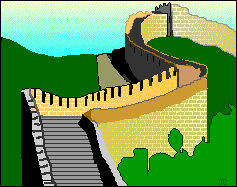

The Great Wall of China was built over 2,000 years ago, by Qin Shi Huangdi, the first emperor of China during the Qin (Ch'in) Dynasty (221 B.C - 206 B.C.). In Chinese the wall is called "Wan-Li Qang-Qeng" which means 10,000-Li Long Wall ( 10,000 Li = about 5,000 km).

After subjugating and uniting China from seven Warring States, the emperor connected and extended four old fortification walls along the north of
China that originated about 700 B.C. (over 2500 years ago). Armies were stationed along the wall as a first line of defense against the invading
nomadic Hsiung Nu tribes north of China (the Huns). Signal fires
from the Wall provided early warning of an attack.
The Great Wall is one of the largest building construction projects ever completed. It stretches across the mountains of northern China, winding north
and northwest of Beijing. It is constructed of masonry, rocks and packed-earth. It was over 5,000 km (=10,000 Li) long. Its thickness ranged from about
4.5 to 9 meters (15 to 30 feet) and was up to 7.5 meters (25 feet) tall.
During the Ming Dynasty (1368-1644), the Great Wall was enlarged to 6,400 kilometers (4,000 miles) and renovated over a 200 year period, with watch-towers and cannons added.
The Great Wall can be seen from Earth orbit, but, contrary to legend,
is not visible from the moon, according to astronauts Neil Armstrong, Jim Lovell, and Jim Irwin.
Taj Mahal is an amazing specimen of architectural art. It was built by Shah Jahan. After the death of Mumtaz Mahal, Shah Jahan had decided to build Taj Mahal in her loving memory.
It is a white marvel mausoleum. It shines bright in moonlight. People around the world come to get a glimpse of this magnificent art of Medieval India.
Taj Mahal is widely regarded as a symbol of love. When people see this beautiful structure, they recall the love stories of Shah Jahan and his wife, Mumtaj. Please watch this video.!!
The Great Pyramids of Giza are some of the most famous manmade objects in the world, and they have been famous since ancient times. In fact, the Great Pyramid of Khufu (Cheops) is the only "Wonder of the Ancient World" that still survives. However, there are actually over one hundred Pyramids in Egypt, including at least eight more at Giza.
Many Egyptologists have somewhat different views on exactly why the ancient Egyptian kings built Pyramids as their tombs, but all of them seem to agree that it had to do with their worship of the sun god, Re (Ra). Most believe that the Pyramid was symbolic of the Benben, a mound that rose from the waters during the creation of the earth, in ancient Egyptian mythology, which was closely associated with Re as the creator god.